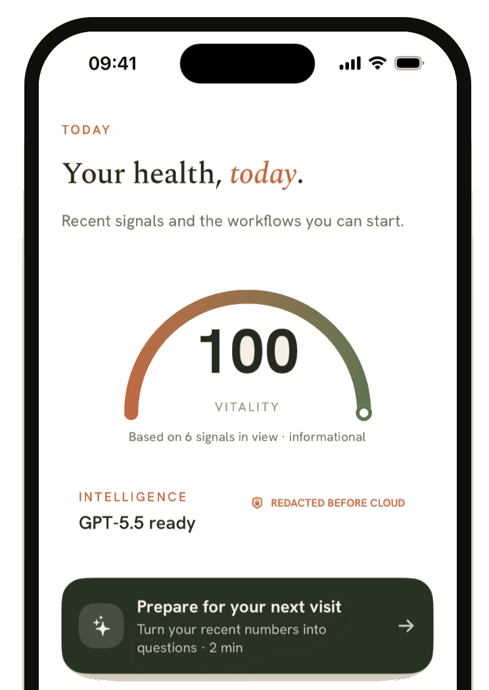

Your Data. Your Model. Your Hardware.
OpenMed reads clinical text and removes 55+ PHI types on the hardware you control, so patient data never leaves the device. The same open models run from a phone to a GPU server, fully offline. 1,500+ models, 17 PII languages, and state of the art on 10 of 12 biomedical NER benchmarks.
Four lines to production.
Composable Python APIs for notebooks and services. Same call shape across local MLX, CPU, and cloud.
-
analyze_text(...)One-call inference with structured outputs -
extract_pii / deidentifyLanguage-aware across 17 model-backed languages -
BatchProcessor(...)Progress callbacks, per-item results -
OpenMedConfig.from_profile(...)dev / prod / test profiles
pip install openmed
A faster way to explain the fold.
The local protein dashboard at outputs/viewer.html is built
for a 30-second loop: open one sample, read the summary, highlight the important regions,
and reset cleanly for the next person.
One-screen structure story
The fold, the sequence, the metrics, and the guided steps stay visible together so the structure is easy to understand at a glance.
Structure, regions, summary, reset
Use the sample selector and the demo button to cycle through overview, highlighted regions, short metrics, and a clean reset for the next pass.
The same models, from a phone to a GPU server.
The same open models run on iPhone, iPad, and Android via OpenMedKit, in React Native apps, on plain laptop CPUs, Apple Silicon, and NVIDIA GPUs, in the browser through WebGPU, and as REST or gRPC services: no cloud, no telemetry, nothing leaving the device.
Accelerated local workflows on Apple Silicon
Install openmed[mlx] to run local inference, PII extraction, and Nemotron Privacy Filter workflows with Apple-native MLX acceleration on Mac.
Read the MLX backend guide →Swift-native PII and clinical LLMs for Apple apps
Bring detection, smart entity merging, and local model execution into macOS, iOS, and iPadOS apps without sending PHI off device.
Explore OpenMedKit docs →Run token classification in the browser
Export ONNX token-classification artifacts into the transformersjs/ layout and load them with Transformers.js for WebGPU-backed browser inference.
Read the Transformers.js export guide →Clinical text de-identification, built for HIPAA & GDPR.
Language-aware PII models across 17 supported PII language codes: ar, de, en, es, fr, he, hi, id, it, ja, ko, nl, pt, ro, te, th, and tr, plus validator-backed national-ID coverage for additional ID-only locales. These are the model-backed PII language allow-list. Process data locally, so your PHI never leaves your environment.
Context-aware PHI detection
Presidio-inspired scoring boosts confidence when keywords like SSN:, DOB:, or NPI: appear near detected entities.
Checksum & format validation
Built-in validators reduce false positives: French NIR, German Steuer-ID, Italian Codice Fiscale, Spanish DNI/NIE, Dutch BSN, Portuguese CPF/CNPJ, Luhn.
Smart entity merging
Subword tokenizers split 123-45-6789 into fragments; semantic patterns reassemble complete SSNs, phones, and multi-word entities.
Zero data movement
Process PHI entirely on your infrastructure. No API calls to external services. Your clinical data never leaves your secure environment.
Flexible redaction methods
Mask with entity-type labels [NAME], redact completely, hash, shift dates, or replace with deterministic Faker-backed surrogates. Configurable thresholds for precision control.
HIPAA Safe Harbor ready
Detects all 18 HIPAA Safe Harbor identifiers, part of a wider 55+ PII entity catalog, across 17 model-backed PII language codes, with additional validator-backed national-ID coverage for ID-only locales.
State-of-the-art, by entity type.
Production-ready LLMs for healthcare and clinical AI across 13 biomedical domains: chemicals, diseases, genes, proteins, species, anatomy, oncology.
Prefer managed, HIPAA-compliant endpoints over self-hosting? Selected OpenMed models ship as model packages on AWS SageMaker, with sub-100ms inference and end-to-end encryption.
Open at the core. Real products.
The OpenMed library is open source and free. Welna and OpenMed Agent are separate products built on top of it: one for patients, one for clinical teams.
Private patient intelligence for iPhone
Reads Apple Health with your permission, redacts identifiers on device, and turns ninety days of signals into plain-language reads, plus the questions worth bringing to a clinician.

Terminal-native AI for clinical workflows
One inspectable agent for prior auth, appeals, coding, claims, care coordination, and FHIR work, with visible plans and auditable artifacts before any action.
Started as a SOTA NER paper. Grew into the catalog.
The original work, domain-adaptive pre-training with parameter-efficient LoRA on 350k biomedical passages, set state-of-the-art on 10 of 12 NER benchmarks. Since then, the catalog has expanded into multilingual PII, Apple-native MLX variants, and curated datasets across the broader OpenMed collection.
Questions from the clinical, ML, and compliance teams.
If we haven't answered yours, reach out; we reply from the same people who train the models.
An open-source medical NLP toolkit. Specialized transformer models fine-tuned for biomedical named-entity recognition: diseases, drugs, genes, anatomy, chemicals, oncology, plus PII extraction and de-identification across 17 supported PII language codes: ar, de, en, es, fr, he, hi, id, it, ja, ko, nl, pt, ro, te, th, and tr. These are the model-backed PII language allow-list. Ships as a Python package, Dockerized FastAPI and gRPC services, Swift and Kotlin OpenMedKit packages, React Native bridge, and browser runtime. Apache-2.0, no vendor lock-in, runs on your infrastructure.
Encoder transformers (BERT, ELECTRA, DeBERTa families), not generative chat models. They do extraction and classification, pulling structured entities out of unstructured clinical text, and stay small enough to run on a laptop or a phone. The paper (arXiv:2508.01630) reports new state-of-the-art on 10 of 12 biomedical NER benchmarks. Think of them as complementary to the larger generative "medical LLM" category, not a replacement.
Nowhere you don't send it. You download the models once (Hugging Face or a private mirror) and inference runs wherever you run the Python process, the Docker container, or the Swift app: your laptop, your VPC, an on-prem server, or air-gapped hardware. No telemetry, no license check-in, no outbound calls at runtime. PHI stays on your side of the fence by default.
The PII catalog covers all 18 HIPAA Safe Harbor identifiers across 17 supported PII language codes: ar, de, en, es, fr, he, hi, id, it, ja, ko, nl, pt, ro, te, th, and tr, the model-backed PII language allow-list, with locale-aware validators for SSN, NIR, Steuer-ID, Codice Fiscale, DNI, BSN, CPF/CNPJ, RRN, CNP, Luhn checks, and additional ID-only national-ID validators. Models are trained on de-identified, ethically sourced corpora. OpenMed provides the technical controls (on-device processing, configurable thresholds, multiple redaction methods); the legal compliance boundary lives in your deployment.
Yes. Models are published on Hugging Face under permissive licensing with full training recipes. The reference approach combines lightweight domain-adaptive pre-training on a 350k-passage biomedical corpus with parameter-efficient LoRA fine-tuning, updating less than 1.5% of model parameters and completing in under 12 hours on a single GPU (<1.2 kg CO₂e). Tokenizer assets and starter notebooks are in the openmed-starter repo.
No. The Python toolkit, OpenMedKit (Swift), and MLX backend are fully self-contained Apache-2.0, so you can build and ship without ever touching the Agent. OpenMed Agent is a separate medical agent currently in preview: a terminal-native runner for clinical workflows on top of the same stack.
9.4M installs and counting. Built in the open.
OpenMed has crossed 9.4 million installs on PyPI, and every model, validator, and language pack came from a community that ships in public. Star the repo, open an issue, or send a pull request: clinical AI gets better when more people can see how it works.